play around with diffusion models, implement diffusion sampling loops, and use them for other tasks such as inpainting and creating optical illusions.
Part 0 setup
SEED = 180
Running the model on the three text prompts with num_inference_steps = 20 produces ok results. All three images have some form of degeneration. The man is cross eyed, the colors of the painting are wrong.
As expected, running the model at double the number of denoising steps produces significantly better results. More denoising steps is the same as a finer grain walk back from the pure random image.
1.1 Implementing the forward process
A key part of diffusion is the forward process, which takes a clean image and adds noise to it. we get a noisy image by sampling and scaling acording to some time schdule. The forward process is not just adding noise, it's also scaling the image.
the test image at noise levels [250, 500, 750]
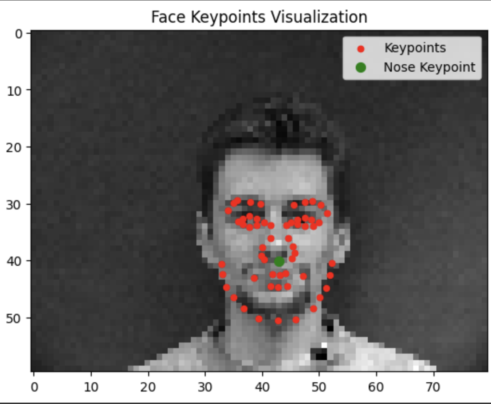
We first attempt to denoise the images with classical denoisng by using Gaussian blur filtering to try to remove the noise. The results leave much to be desired.
Classical Denoising
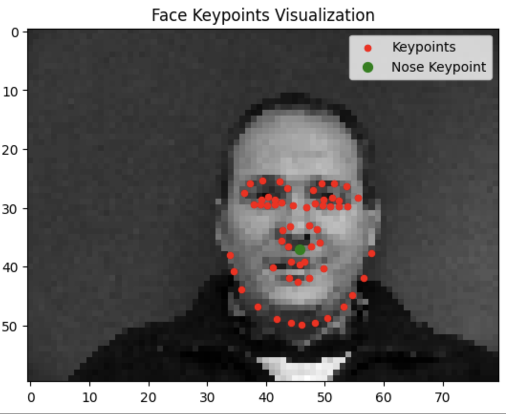
Our second attempt is to use the pretrained diffusion model to denoise the images. The unet is conditioned on the amount of Gaussian noise by taking timestep t, and the diffusion model was trained with text conditioning so we use the following values as additional input: t = [250, 500, 750], and the embedding for the prompt "a high quality photo"
One Step Denoising
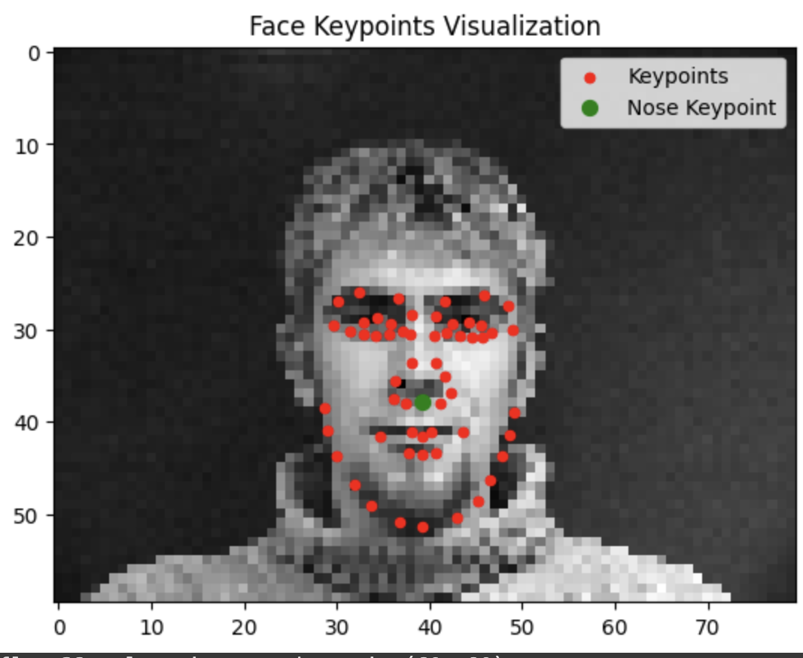
The onestep denoising works pretty well but diffusion models are designed to to work iteratively. We can significantly improve the performance of our denoising through the iterative process. Though we could start our denoising at timestep 1000 and take steps of size one until reaching the 0 noise prediction this would require running the diffusion model 1000 times (slow and expensive). Instead we implement strided timesteps.
Iterative Denoising
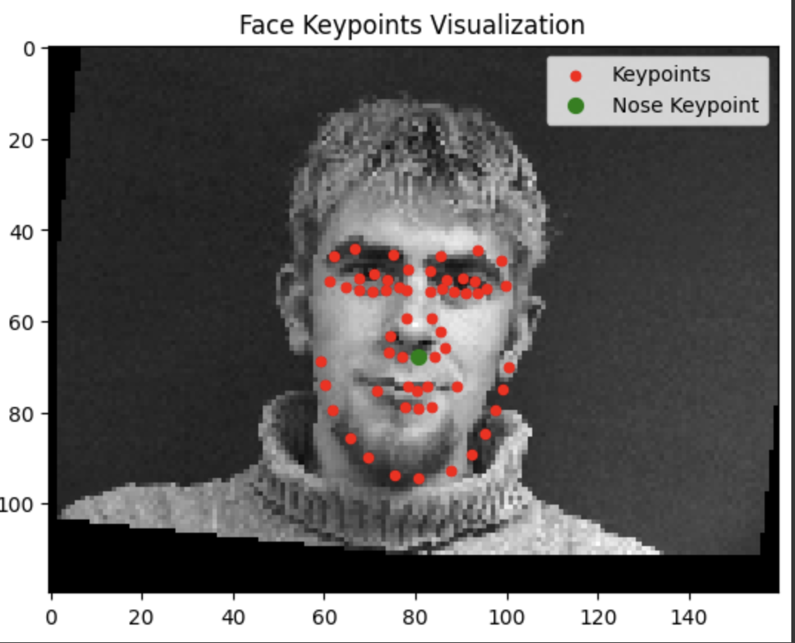
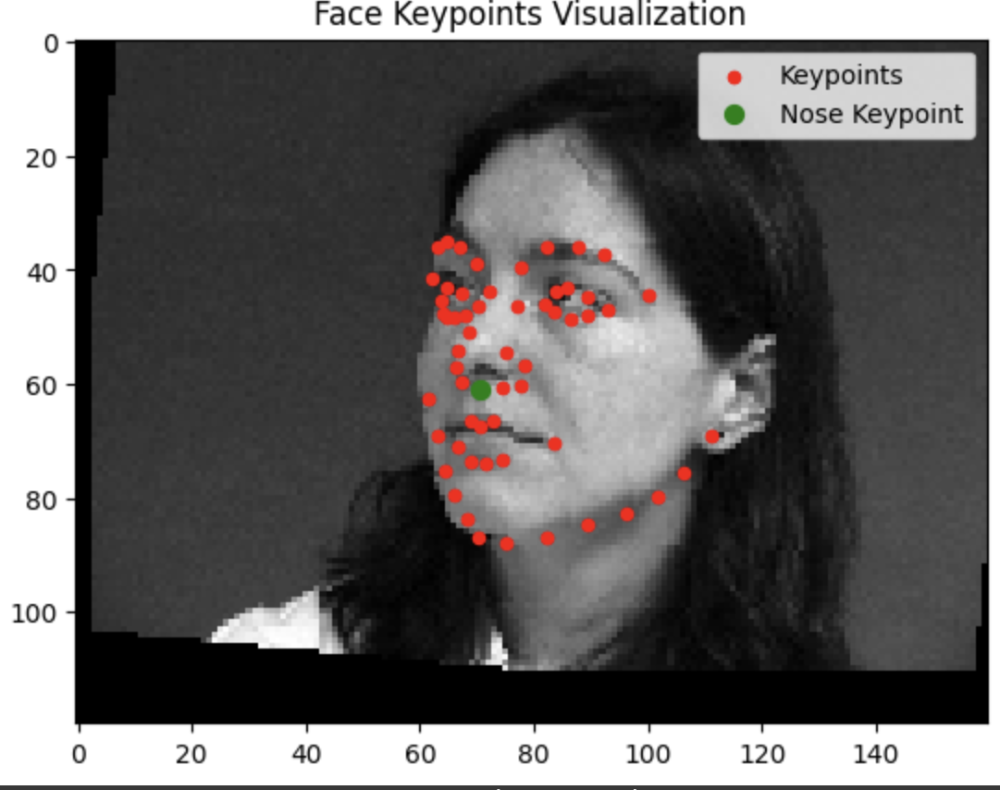
Diffusion Model Sampling
With the iterative_denoise function we can generate images from scratch. We can do this by setting i_start = 0 and passing in random noise.
Classifier Free Guidance
The generated images in the prior section are not very good. To improve image quality at the expense of image diversity we can use Classifier-Free Guidance.
For CFG we compute both a noise estimate conditioned on a text prompt, and an unconditional noise estimate, Then our noise estimate becomes unconditional + gamma (conditioned - unconditional). We use gamma = 1.2
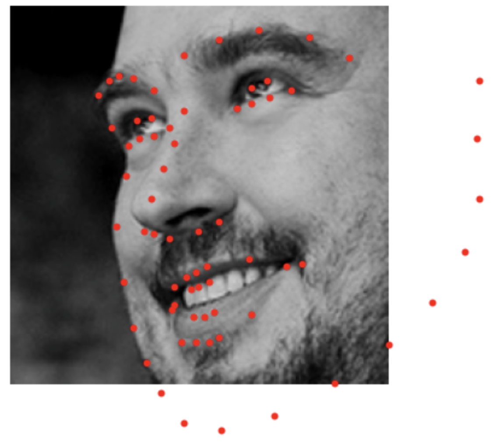
Image-to-image Translation
we're going to take the original images and our test image, add some noise and then force it back onto the image manifold without any conditioning, hoping to get some similar image. Edits at noise levels = [1, 3, 5, 7, 10, 20]
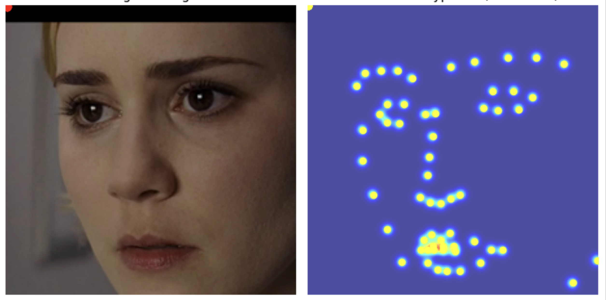
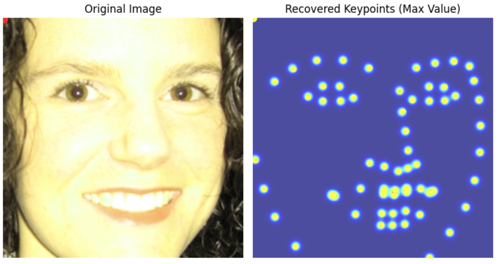
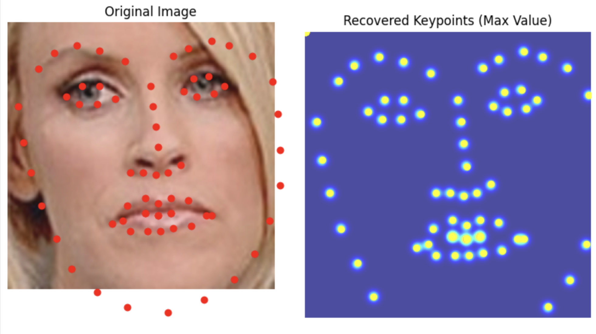
Editing Hand-Drawn and Web Images
Using the same idea we start with an unrealistic image, say a drawing/ web image and we can project it onto the image space.
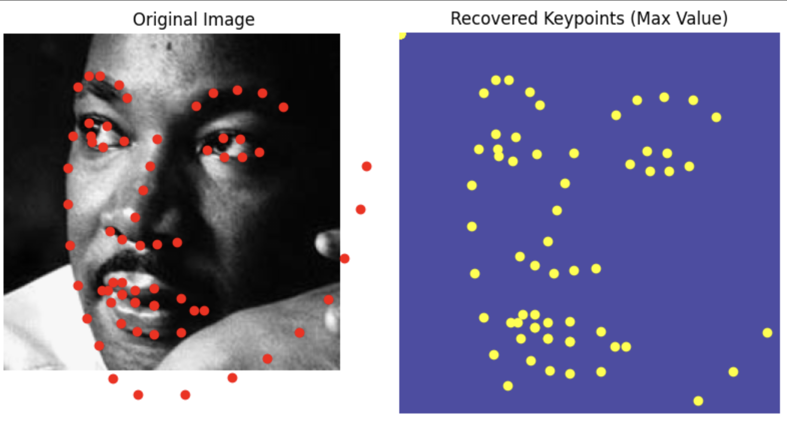
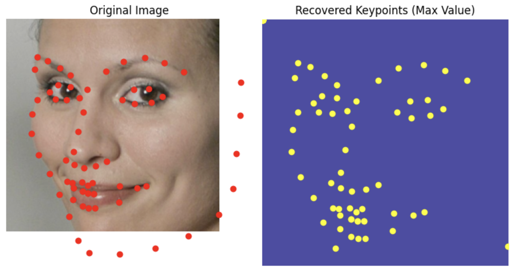
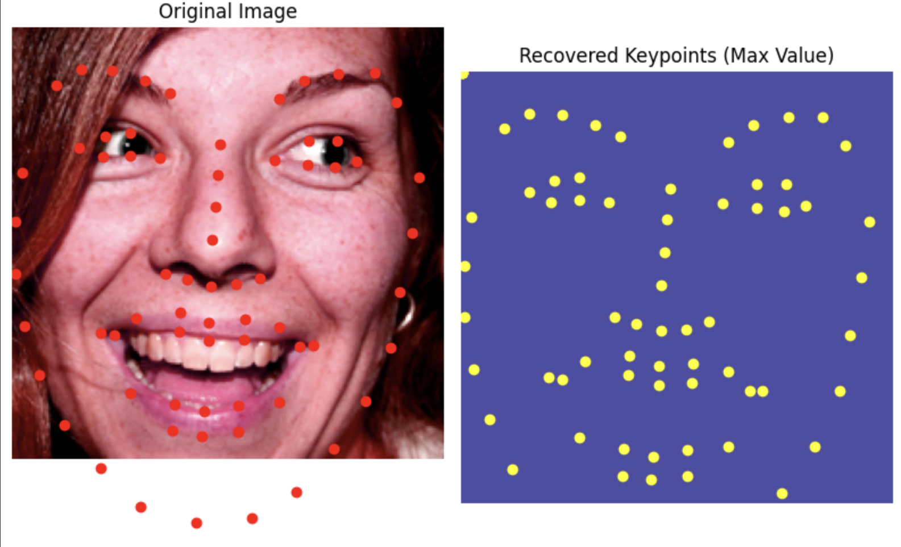
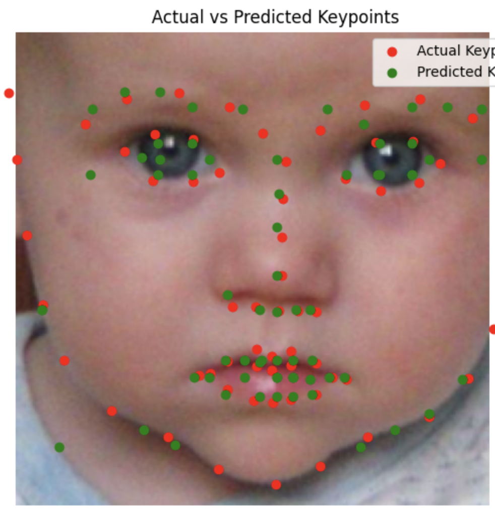
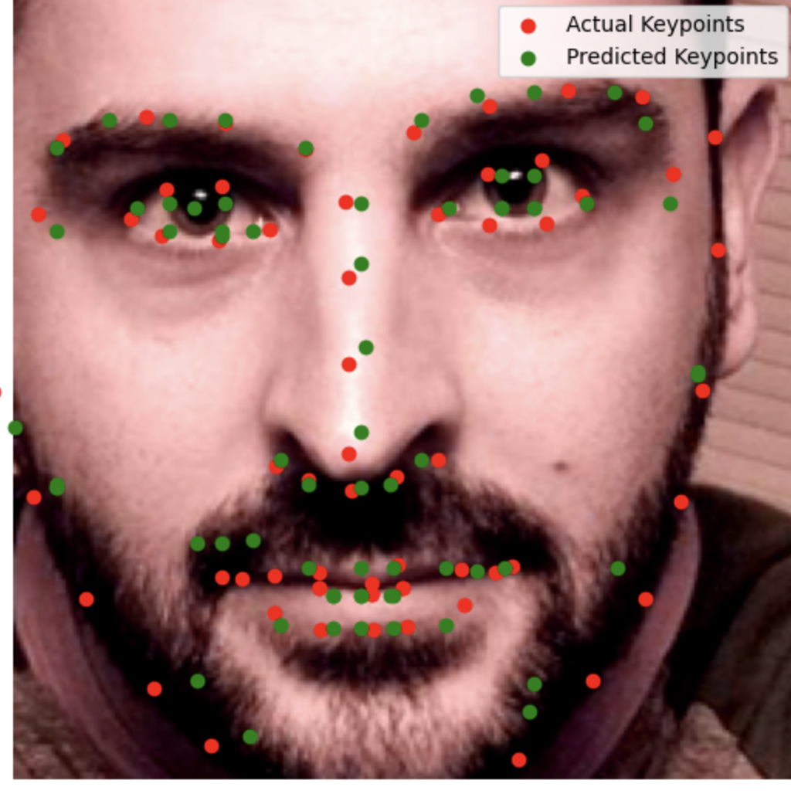
Inpainting
Given an image and a binary mask, we can create a new image that has new content wherever the mask covers. we leave everything inside the edit mask alone, but we replace everything outside the edit mask with our original image -- with the correct amount of noise added for timestep t.
Text-Conditioned Image-to-image Translation
We can guide the projection of the image with a text prompt, converting thins into rockets for example. noise levels = [1, 3, 5, 7, 10, 20]
Visual Anagrams
To create visual anagrams we will denoise an image at step t normally with one prompt and at the same time, we will flip the inmage upside down, and denoise with the prompt a different prompt, to get another noise estimate. We can flip the second noise estimate , to make it right-side up, and average the two noise estimates. We can then perform a reverse diffusion step with the averaged noise estimate.
Prompts:
an oil painting of an old man + an oil painting of people around a campfire
a rocket ship + a man wearing a hat
an oil painting of a snowy mountain village + a lithograph of a skull
Hybrid Images
Another cool visual ilussion. The proedure is to create a composite noise estimate epsilon by estimating the noise with two different text prompts, and then combining low frequencies from one noise estimate with high frequencies of the other.
Prompts:
a lithograph of a skull + a lithograph of waterfalls
a lithograph of a skull + an oil painting of a snowy mountain village
an oil painting of an old man + an oil painting of people around a campfire
PART B
Training a Single-Step Denoising UNet
Architecture:
We start by building a simple one step denoiser and we implement it as a UNet. Architecture Above.
Visualize the different noising processes over sigma = [0.0, 0.2, 0.4, 0.5, 0.6, 0.8, 1.0]
The model denoising at epoch 1, and 5
Training loss, model de noising over sigma = [0.0, 0.2, 0.4, 0.5, 0.6, 0.8, 1.0]
Reflections
You can see that in the first epoch that the denoising isn’t perfect and certain edges, intersections and curves seem difficult for the network to parse ( especially in the 4 and the 3) But by the 5th epoch the reconstructions are very convincing.
Adding Time Conditioning to UNet
We need a way to inject scalar t into our UNet model to condition it, for this we do as the project website recommends and introduce a block called FCBlock that consists of a Linear block followed by a GELU followed by another Linear block. We have two of these blocks that take in a normalized t and then we inject the output into the up block and the unflatten sections respectively.
Results
Reflections
This is clearly a more difficult task, it takes more epochs to get good results. In epoch 5 you can recognize numbers but at the same time you can tell that something is off.
Adding Class-Conditioning to UNet
To make the results better and give us more control for image generation, we can also optionally condition our UNet on the class of the digit 0-9. We do this by adding two more FCBlocks and then by injecting their output in the way that the project description recommends.
Results
Reflections
Both epoch 5 and 20 create the distinct numbers we want in the right locations, epoch 5 still creates some small artifacts and separations (the fours and nines are good examples, but this might be because some people write their nines and fours with that point). Once we’ve reached epoch 20 all those imperfections have been smoothed out,
Coolest thing I learned
Clasifier free guidance was very interesting, using the models to fill in gaps was also cool but I think the coolest thing I learnt was architecture for u net
Information
This website contains transitions not captured by the pdf, spesificaly, the title image changes into a high gamma verison and then into the black and white threshold filter version.